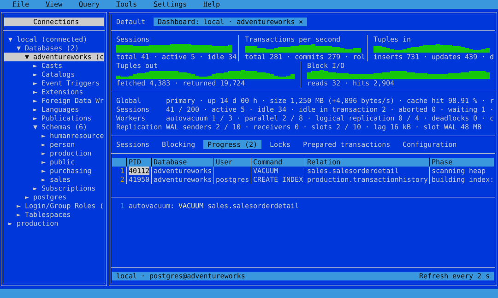
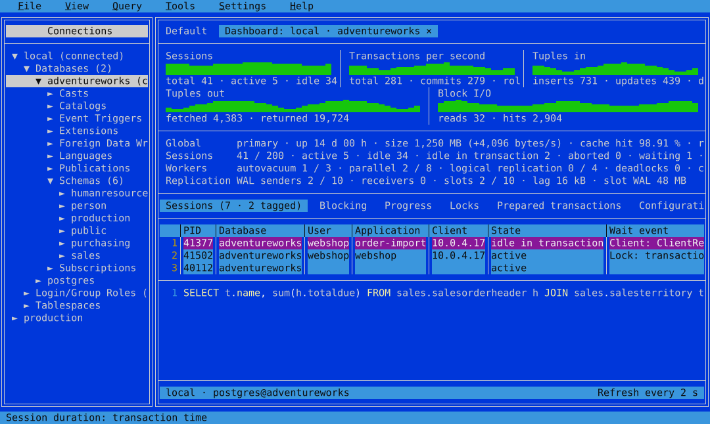

Server dashboard
A periodic sample of pg_stat_database, pg_stat_activity, lock waits, the
pg_stat_progress_* views, pg_locks, pg_prepared_xacts and
pg_settings, with pg_cancel_backend() / pg_terminate_backend() on a key.

Opening the dashboard
Alt+D (also Ctrl+D) on a row of a connected server; ; the context menu (F2).
| Tree cursor on | Scope | Session on |
|---|---|---|
| the server row, Databases, a role, a tablespace | The cluster: all databases summed. | the maintenance database |
| a database or anything inside it | That database: every query is filtered by datname. | that database |
- One tab per server and scope; opening it again switches to it.
- Its own session. The queries exclude
pg_backend_pid(). - Cost: a refresh is two queries — one row of counters and the list that is shown; the other lists are
not read. No user table is scanned. Two values touch the file system:
pg_database_size()(at most every 30 s) andpg_ls_tmpdir(). - Privileges: without superuser or
pg_read_all_stats(pg_monitor) you see the details only of your own backends, and some summary values show-.
Refreshing
| Key | |
|---|---|
| F5 | Refresh now; reconnect after a lost session. |
| Ctrl+P | Pause / resume. |
| Ctrl+T | Interval: 0.5 → 1 → 2 (default) → 5 → 10 → 30 s. |
The next refresh is timed from the answer of the previous one, so requests do not pile up. The list cursor stays on its PID.
The graphs
| Box | Source |
|---|---|
| Sessions: total · active · idle | pg_stat_activity, backend_type = 'client backend', by state. |
| Transactions per second | xact_commit, xact_rollback. |
| Tuples in | tup_inserted, tup_updated, tup_deleted. |
| Tuples out | tup_fetched, tup_returned. |
| Block I/O | blks_read, blks_hit. |
Rates are the difference of two samples of pg_stat_database (summed on a cluster dashboard) divided
by the difference of the server's clock_timestamp(). On a low window the graphs are dropped first. If
the statistics query fails, its error is shown where the graphs are; the list below goes on.
The summary
| Line | Value | Source |
|---|---|---|
| Global | primary / standby, up | pg_is_in_recovery(), pg_postmaster_start_time(). |
| size (+ bytes/s) | Sum of pg_database_size(), read at most every 30 s and on F5. Databases without CONNECT for your role are skipped. | |
| cache hit | blks_hit / (blks_hit + blks_read) between the last two samples, not since stats_reset. | |
| rollback | xact_rollback as a share of all transactions. | |
| temporary files | Count and size from pg_ls_tmpdir() over all tablespaces, right now. PostgreSQL 12+; needs EXECUTE on the function (superuser, pg_monitor). | |
| Sessions | 41 / 200, by state | Client backends out of max_connections, by state. |
| waiting | Client backends with wait_event_type = 'Lock'. | |
| oldest transaction, longest query | Smallest xact_start; smallest query_start of an active backend. WAL senders are left out. | |
| oldest xmin and its PID | Largest age(backend_xmin). | |
| Workers | autovacuum, parallel, logical replication | Backends by backend_type out of autovacuum_max_workers, max_parallel_workers, max_logical_replication_workers. |
| deadlocks, conflicts, checksum failures | Increase of deadlocks, conflicts, checksum_failures (12+) since the previous refresh; above 0 in the warning colour. | |
| Replication | WAL senders, receivers, slots | pg_stat_replication out of max_wal_senders, pg_stat_wal_receiver, pg_replication_slots out of max_replication_slots. |
| lag | Largest pg_wal_lsn_diff(pg_current_wal_lsn(), replay_lsn). Primary only; needs monitoring privileges. | |
| slot WAL | Largest distance from a slot's restart_lsn to the current WAL position (replay position on a standby). |
On a database dashboard the Sessions line and the pg_stat_database values are that database's;
workers, replication and temporary files are always cluster-wide.
The lists
Sessions · Blocking · Progress · Locks · Prepared transactions · Configuration. They are the grid of query results: see The grid.
| Key | |
|---|---|
| Alt+Right / Alt+Left | Next / previous list (also Ctrl+PgDn / Ctrl+PgUp, Alt+PgDn / Alt+PgUp). |
| Enter | The whole row in a window. |
| Ctrl+C | Copy the cell; after Ctrl+A, the list. |
| F2 | Context menu. |
Sessions
The rows of pg_stat_activity, auxiliary processes included, under the view's column names. What is
not a plain column:
| Column | |
|---|---|
| Wait event | wait_event_type: wait_event. |
| Blocked by | pg_blocking_pids(pid), computed only for wait_event_type = 'Lock'. |
| Duration | See below. |
| Xmin age | age(backend_xmin). |
| Leader PID | leader_pid (13+); workers are listed after their leader. |
| Query ID | query_id (14+). |
Row colours
| Theme role | The session |
|---|---|
dashboard.idle_in_transaction | is idle in transaction. |
dashboard.blocking / dashboard.blocked | holds a lock others wait for / waits for a lock. |
dashboard.slow / dashboard.very_slow (Duration cell) | ≥ 1 s / ≥ 10 s. |
dashboard.tagged | is tagged. |
Duration and order
- Alt+T switches Duration: time since
query_start(default; empty for idle),xact_startorbackend_start. The list is sorted by it, longest first. - Alt+I hides / shows backends in state idle.
The statement pane

Under Sessions, Blocking and Progress; a read-only SQL view.
| Key | |
|---|---|
| Ctrl+R | Hide / show the pane. |
| Alt+Down / Alt+Up | Into the pane / back. |
| Alt+Shift+Up / Alt+Shift+Down | Smaller / larger (or drag its upper line). |
| Ctrl+E | The statement in a new query tab on the backend's database. |
The whole row
Blocking

One row per pair: every backend with wait_event_type = 'Lock', joined to each PID in its
pg_blocking_pids().
- Lock type, Mode, Relation: the waiter's ungranted row in
pg_locks. - Transaction time: since the blocker's
xact_start. - Waiting for: since the blocked statement's
query_start, not the start of the wait; longest first. - Cancel and terminate act on the blocker.
Progress

The union of the pg_stat_progress_* views the server has (vacuum 11;
cluster, create_index 12; analyze, basebackup 13 — cluster
dashboard only; copy 14), joined to pg_stat_activity.
- Done counts heap, index or sample blocks; bytes for
COPYand base backups. - Done % is that of the current
phase; empty when the total is not known. - Running for: since
query_start; longest first.
Locks
pg_locks without the dashboard's own rows. Granted is yes / no.
Prepared transactions
pg_prepared_xacts.
Configuration
pg_settings: name, category, setting (in the base
unit), unit, short_desc. Source and file of each setting: the
server row in the tree.
Cancelling a query, terminating a session
In Sessions, Blocking and Progress, on the row under the cursor:
| Key | |
|---|---|
| Alt+Shift+C | pg_cancel_backend(pid) |
| F8 | pg_terminate_backend(pid) |
- The signal is sent only if
pg_stat_activitystill has that PID with thebackend_startthe list showed, so a reused PID is not hit. - A role that is not a superuser or a member of
pg_signal_backendmay signal only its own backends; the server's error is shown in the status line.
Several sessions at once: tagging

In Sessions, Insert tags / untags the row and moves down; Esc removes all tags. With tags set, Alt+Shift+C and F8 act on all tagged sessions, after one question. The tag of an exited backend goes with it.
All dashboard keys
| Key | |
|---|---|
| F5 | Refresh now; reconnect. |
| Ctrl+P | Pause / resume. |
| Ctrl+T | Refresh interval. |
| Alt+Right / Alt+Left | Next / previous list. |
| Alt+I | Hide / show idle sessions. |
| Alt+T | Duration mode. |
| Insert / Esc | Tag / remove all tags. |
| Enter | The whole row. |
| Alt+Shift+C | Cancel query. |
| F8 | Terminate session. |
| Ctrl+R | Statement pane. |
| Ctrl+E | The statement in a new query tab. |
| Ctrl+C | Copy. |